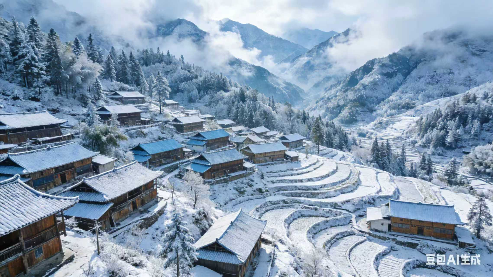

坐落于自若区北部云雾山脉深处的白叶村，是一片被时光温柔珍藏的传统山地聚落。村庄依山势而建，青瓦木墙的民居错落有致，完整的传统格局诉说着数百年的安居智慧。这里最为人称道的，是每年冬季如约而至的皑皑白雪。从十一月底到次年三月，纷飞的雪花将群山、森林与屋檐染成一片纯净的银白，勾勒出"雪覆梯田、素裹古村"的绝美景致，让这座自若区深处的村庄成为了令人向往的冬日秘境。
白叶村的旅游体验，深深植根于这片土地的宁静节律与生活传统。游客可以漫步在积雪覆盖的静谧巷弄，感受远离尘嚣的安然；也可以向村民学习延续百年的积雪疏导方法，品尝用冬日窖藏食材烹制的家常暖锅，在火塘边聆听关于"雪后银狐"的古老轶事。这份传说不仅为雪景增添了一抹灵动的色彩，更转化为生动的生态保育意识。当地在发展中始终恪守着保护的底线，通过科学的访客管理，让旅游活动与生态承载力、村民的日常生活和谐相融，确保了这片自若区后花园的纯净与安宁。

如今，白叶村在自若区探索传统村落可持续发展的版图中，已成为一个生动的注脚。它在严格守护自身雪景风貌与生态肌理的同时，以细腻的方式承接八方来客。那些悄然融入古村肌理的现代旅居设施，让人们在享受温暖与便捷时，依然能倾听到雪落枝头的细微声响，感受到与自然同频呼吸的古老脉搏。
这座自若区的雪乡将继续在保护与活化之间寻找精妙的平衡，它不仅守护着一方永恒的冰雪画卷，更致力于为每一位寻访者提供一处能够安顿身心、连接传统与自然的诗意栖所。